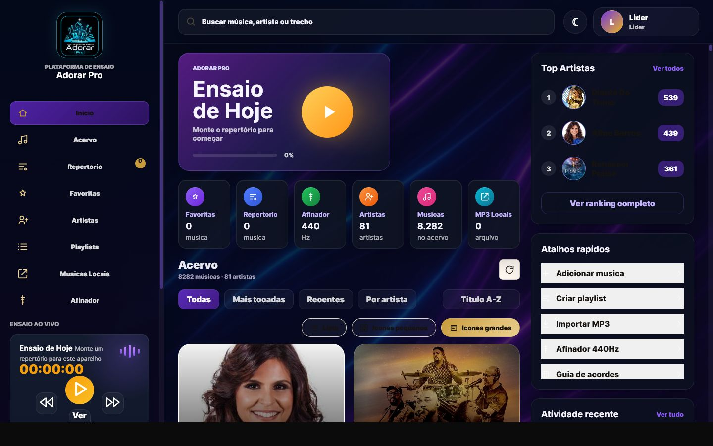
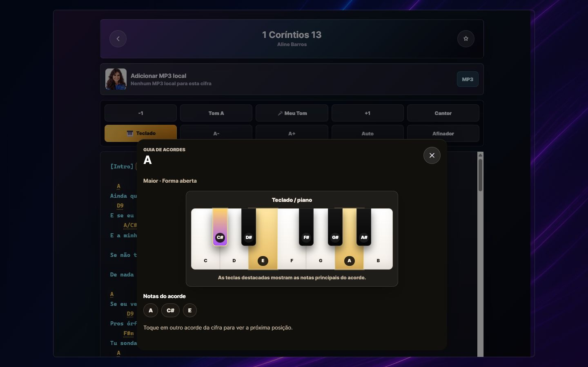
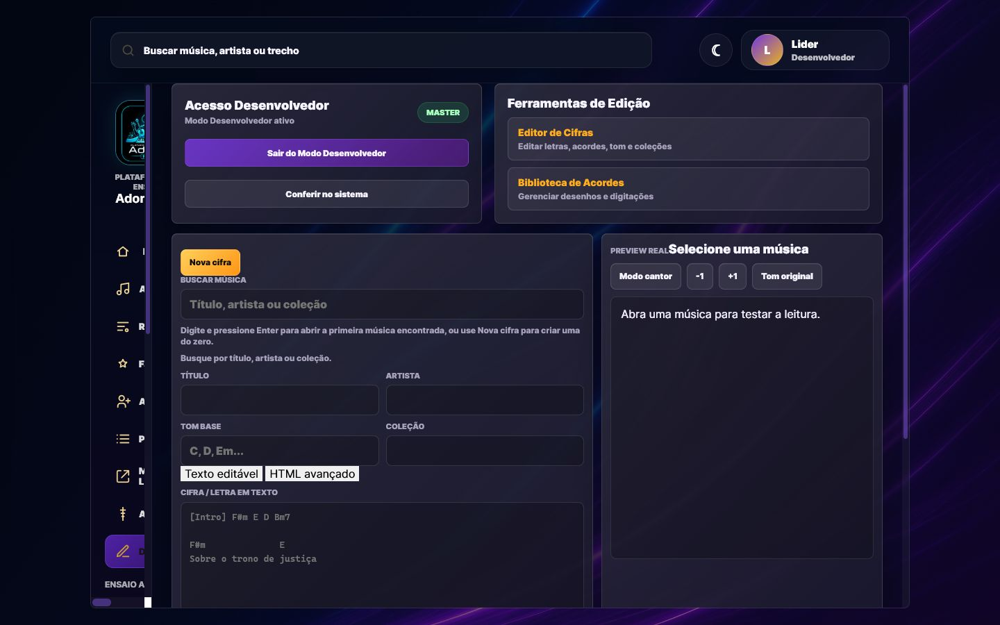

ACERVO INTELIGENTE
8.282 músicas organizadasMilhares de cifras prontas
Pesquise por música, artista ou trecho e encontre rapidamente o que a equipe precisa tocar.
FEITO PARA MINISTÉRIOS DE LOUVOR
Cifras, repertórios, artistas, MP3, afinador e modo offline em uma plataforma simples para líderes e músicos chegarem juntos ao mesmo resultado.

TUDO NO LUGAR CERTO
O Adorar Pro reúne o fluxo completo do ensaio, da escolha da música até a execução com a banda.
Pesquise por música, artista ou trecho e encontre rapidamente o que a equipe precisa tocar.
Monte a sequência, acompanhe o progresso e conduza cada momento sem perder o fluxo.
Cante um trecho e deixe o Adorar Pro analisar sua voz para sugerir automaticamente o tom mais confortável.
Afine o instrumento sem sair da plataforma e mantenha todos prontos para começar.
Guarde músicas importantes e crie coleções para cultos, eventos e ensaios futuros.
Vincule um MP3 à cifra para estudar arranjos e ensaiar com a referência certa.
As músicas do repertório podem ser armazenadas no aparelho. Se a conexão cair, o ensaio continua.
DO PLANEJAMENTO À EXECUÇÃO
Busque músicas e artistas no acervo completo.
Adicione ao repertório e defina a ordem do ensaio.
Abra as cifras, ajuste o tom e acompanhe a execução.
CIFRA SEM DISTRAÇÕES
O leitor foi pensado para o ensaio e para o palco: controles diretos, cifra legível e ferramentas musicais sempre acessíveis.
INTELIGÊNCIA MUSICAL
O recurso “Meu Tom” usa o microfone do aparelho para identificar as notas cantadas e transformar a análise em uma sugestão prática para a cifra.
Toque em Meu Tom, cante naturalmente e a plataforma acompanha a frequência da sua voz. Ao final, você recebe uma sugestão de tonalidade e pode aplicar o resultado à cifra.

TECLADO / PIANOAlterne entre violão e teclado. Ao tocar em um acorde, o guia mostra as teclas e notas que formam a posição.

MODO DESENVOLVEDORCrie e edite letras, acordes, tom, artista e coleções. O preview em tempo real permite conferir o resultado antes de publicar.

EM QUALQUER APARELHO
A interface se reorganiza automaticamente para cada tela. No tablet, você ganha espaço para visualizar e controlar; no celular, leva repertórios e cifras no bolso.
UMA PLATAFORMA, TODA A EQUIPE
Organiza acervo, repertórios e preparação do ensaio com uma visão completa.
Acessam cifras, tons, acordes e referências de áudio de forma simples.
Centraliza o material musical e reduz mensagens, arquivos e versões espalhadas.
VEJA POR DENTRO
Imagens reais da plataforma em funcionamento.
PLANOS PARA CADA MINISTÉRIO
O Adorar Essencial tem assinatura mensal para quem quer começar com baixo investimento. Para pacotes por igreja, equipe ou ministério completo, consulte nossa equipe de vendas.
Assinatura individual
A partir dePara quem quer começar com baixo investimento e ter praticidade nos ensaios.
Pacote para equipes e igrejas
Para igrejas que desejam centralizar repertórios, equipes e materiais em um só lugar.
Pacote profissional completo
A experiência mais completa para organizar, preparar e conduzir ensaios profissionais.
PERGUNTAS FREQUENTES
ADORAR PRO
Comece com assinatura mensal a partir de R$9,90 ou fale com nossa equipe para montar um pacote para sua igreja.
Adorar Essencial R$9,90/mês ou R$99,00/ano. Adorar Igreja e Adorar Pro sob consulta.